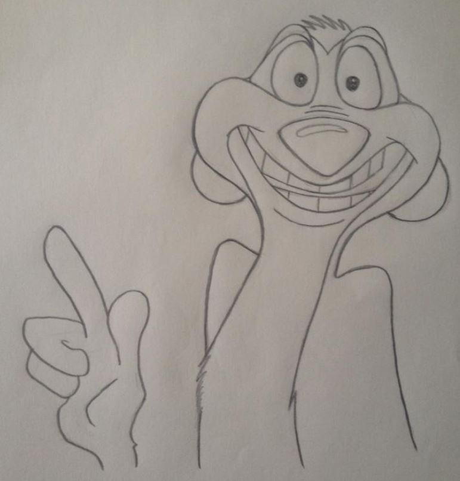
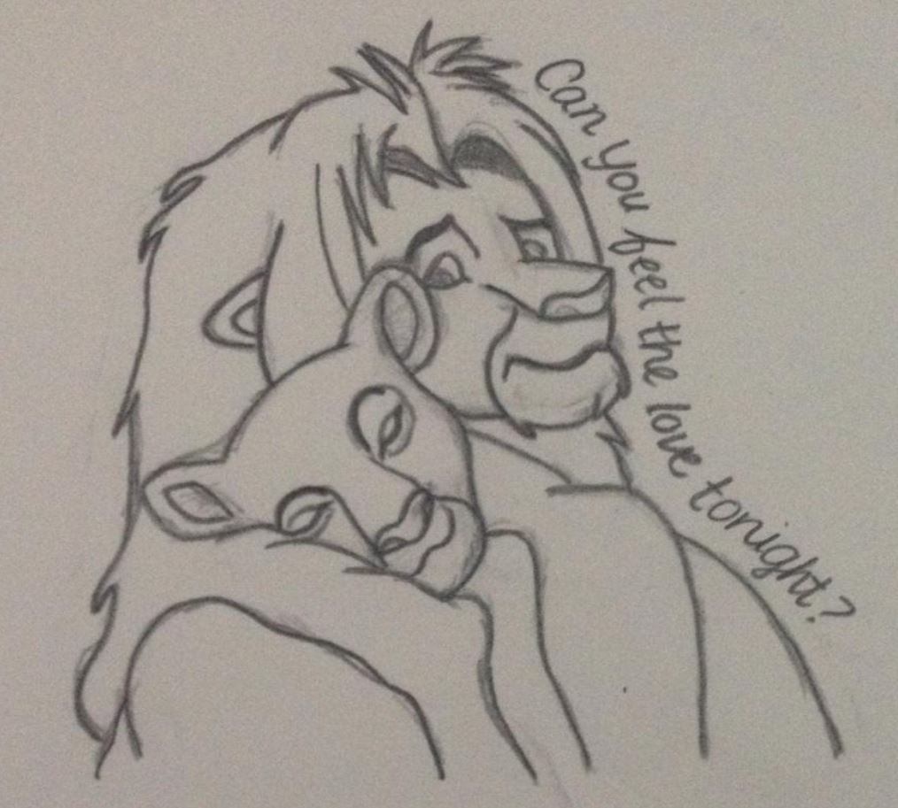
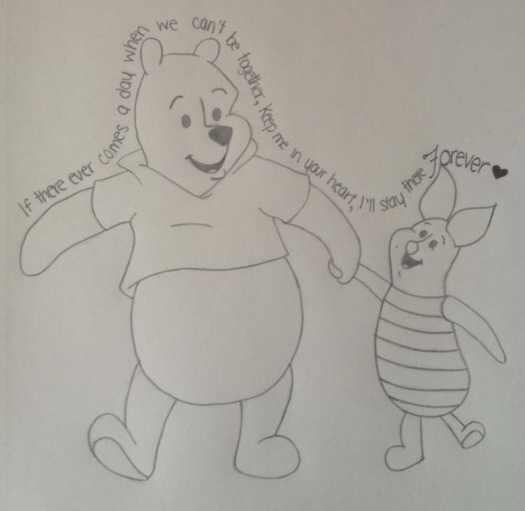
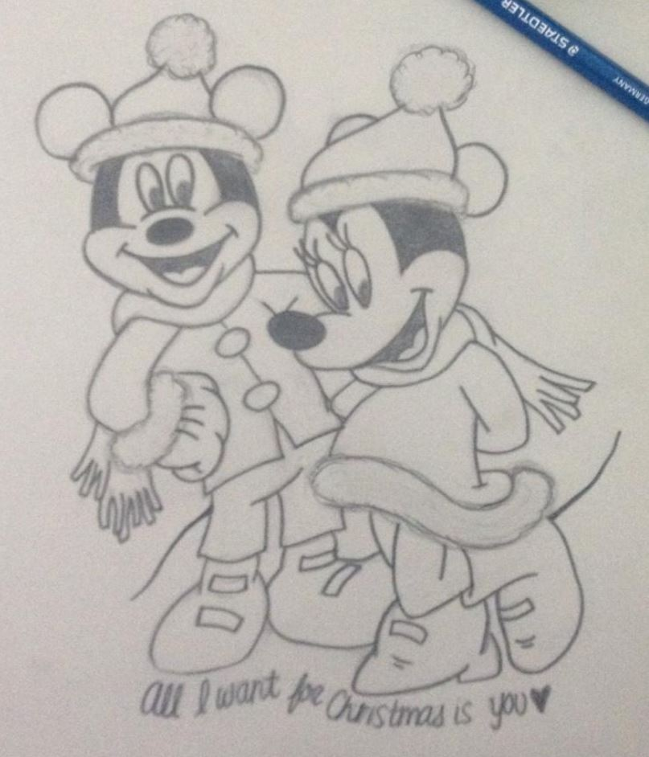

Week One - No Assignment
Week Two - Assignment One: Create a Webpage
Week Three - Assignment Two: Modify Some Images
Week Four - Assignment Three: Design a Net Art Piece
Week Five - Assignment Four: Animation
Week Six - Assignment Five: Sound - Create a Short Radio Play
Week Seven - Assignment Six: Turtle Graphics
Some of my hobbies include swimming, traveling, and various types of art, including drawing, sculpture, and digital art. Below are some examples of my Disney drawings.
|  |  |
|  |  |
I am studying Computer Science at the University of Calgary. I am also taking a minor in Visual Art and Art History.
I am pursuing a career in the field of Human-Computer Interactions, but I also have interests in animation, graphics, and architecture.
I also have an interest in the Computational Media Design (CMD) Masters program at the University of Calgary
(more information regarding the CMD program:
Computational Media Design (CMD)).
More information about me: Resume